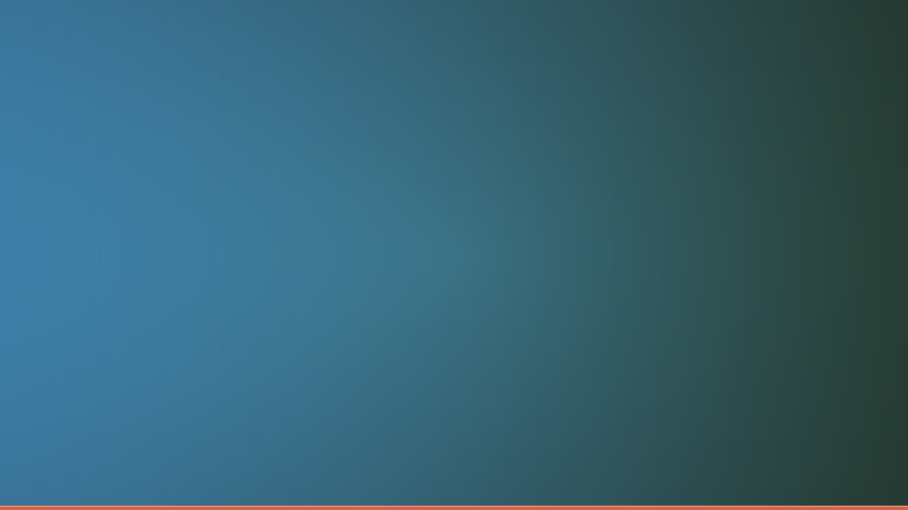

Три часа ночи. Кошка сидит у стены, уши направлены вперёд, взгляд не отрывается от одной точки. Вы зовёте — не реагирует. Это один из самых тревожных для хозяев ритуалов, которому немедленно ищут мистические объяснения. Реальность прозаичнее — и в четырёх объяснениях ниже разберётся любой.
Слуховой диапазон кошки — от 48 Гц до 85 кГц. Человек слышит до 20 кГц. Это значит, что кошка воспринимает ультразвук, который вы физически не способны услышать.
Что производит ультразвук внутри квартиры:
Кошка не смотрит «в стену» — она смотрит туда, откуда идёт звук. Чем настойчивее взгляд, тем интереснее (или тревожнее) источник для неё.
Кошачье зрение адаптировано к обнаружению мелкого движения в условиях слабого освещения. То, что вы не видите при ночном свете, кошка различает отчётливо.
Паук, ползущий по стене. Мелкий жук. Тень от движения уличного транспорта, едва заметная на поверхности. Кошка «видит» контраст там, где ваши глаза регистрируют однородную поверхность.
Если кошка не просто смотрит, но и приближается, приседает в охотничью стойку или делает быстрые движения лапой — скорее всего, это охота за мелким объектом. Осмотрите стену при хорошем освещении.
🐾 Спросите AI-ветеринара прямо сейчас
AnimaLife — приложение, где AI-ветеринар отвечает на вопросы о кошке или собаке 24/7. Бесплатно, без записи и очередей.
Системы отопления, водопровод, вентиляционные шахты — всё это издаёт звуки, интенсивность которых меняется ночью. Ночью внешний шумовой фон снижается, и кошка начинает различать то, что днём заглушалось городским шумом.
Характерный признак: кошка смотрит в стену систематически в одно и то же время или в одну и ту же точку. Это почти всегда означает регулярный источник звука, а не случайное наблюдение. В домах советской постройки трубы стояков часто «стреляют» при тепловом расширении — очень характерный высокий звук именно в диапазоне, интересном кошкам.
У пожилых кошек (10+ лет) возможно развитие когнитивной дисфункции (CDS — Cognitive Dysfunction Syndrome). Одно из её проявлений — дезориентация, «застывание» в одной позе, взгляд в никуда.
Отличие от первых трёх вариантов:
Если у вашей кошки всё это есть — это повод для планового осмотра и разговора с ветеринаром о возрастных изменениях. CDS у кошек поддаётся коррекции через среду (предсказуемый распорядок, ночник, стабильное расположение мисок и лотка).
Норма:
Стоит понаблюдать:
🐾 Дневник здоровья питомца — в кармане
Вес, прививки, симптомы и напоминания в одном приложении. AnimaLife следит за здоровьем питомца вместо вас.
🐾 Понравился разбор?
Подпишитесь на канал — каждый день разбираем по одному тревожному симптому у кошек и собак: что в пределах нормы, а когда пора к врачу. Подпишитесь, чтобы не пропустить разбор, который может спасти здоровье вашего питомца.
Кошка, смотрящая в стену по ночам — почти всегда охотник, отслеживающий звук или движение, недоступные вашим органам чувств. Это нормальное поведение для активного, любопытного животного. Внимания заслуживают только систематические эпизоды у пожилых кошек с сопутствующими изменениями поведения. О том, что ещё говорит кошачье тело, читайте в разборе хвостового языка кошек.